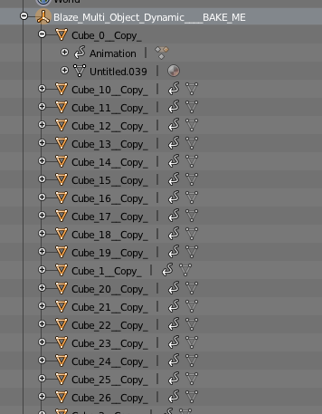
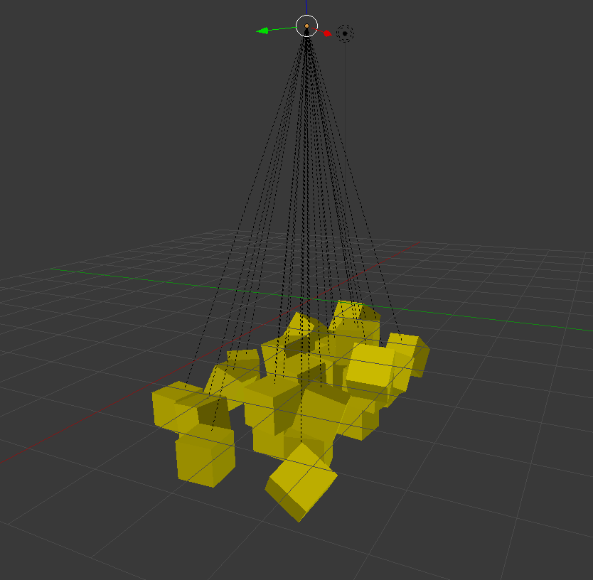

berrymooor
Hi, I make the animation group of falling cubes in Cinema4D and export baked keyframes animation to
fbx > Blender > AssetImport as a result I got bunch of .ani files that relate specifically to one cube in all model, but not overall animation *.ani
So, question is how to merge or combine all keyframe tracks together and get one *.ani (cause i implement scene animation in ActionScript)
 